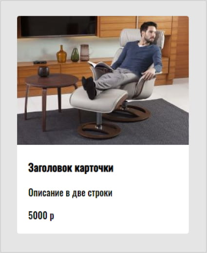

Правила организации отступов: как сделать вёрстку гибкой и не допустить ошибок
Вёрстка должна быть максимально гибкой. Даже если заказчик или работодатель говорит, что сайт статичный и не будет меняться, всё равно стоит делать так, будто завтра добавят несколько блоков текста, несколько элементов или что-то ещё.
Нужно точно знать, как поведут себя блоки при вёрстке, что произойдёт при изменениях. И здесь помогают правила организации отступов. Они позволяют легко менять, улучшать и масштабировать вёрстку и уберегут вас от типичных ошибок.
Содержание
Первая из частей - HTML. Это начальная стадия соблюдения кодстайла, ведь любой сайт вы начинаете писать именно с этого языка. Давайте посмотрим на основные правила:
Основные принципы работы с отступами
У любого сайта или документа есть так называемый поток — порядок вывода объектов в документе. В вёрстке этот поток идёт сверху вниз, слева направо. Именно поэтому, если какой-то элемент на макете находится справа, он должен в HTML-коде идти последним из своей группы.
Исходя из этого, можно сразу сформулировать первый принцип.
Отступы задаются от предыдущего элемента к следующему
Это значит, что в вёрстке нужно стараться использовать CSS-свойства margin-right и margin-bottom, то есть отступ справа и отступ снизу. Проще говоря - избегаем отступов слева и сверху полностью.

Внешние отступы сверху и слева (margin-top и margin-left) заменяются на аналогичные внутренние отступы (padding) у родителя элементов.
Получается, что блок не может сдвигаться благодаря своим отступам, — он делает это только за счёт соседних элементов (и сам двигает соседние).
Отступы задаются только между соседними элементами в потоке
Если у блока нет соседа с левой стороны — задавать ему отступ слева нельзя. То же самое касается любой из сторон.

У обоих задан отступ снизу. Для первого списка это применимо, потому что есть сосед снизу — второй список. А для второго, не имеющего такого соседа, — отступа нет.
Последнему элементу группы нужно обнулять отступ
Это легко сделать с помощью псевдоклассов в CSS. Например, есть псевдокласс :last-child, который позволяет выбрать последний элемент из группы (например, как в нашем случае: мы найдём последний элемент списка).
С помощью :last-child мы обнуляем отступ у последнего ul, как показано в примере. Теперь всё работает как надо.
Чтобы не создавать два селектора, можно написать короче, используя псевдокласс :not. Тут мы буквально говорим следующее: «Задай отступ всем ul, но не последнему».
Типичный пример: отступы в карточке
Рассмотрим типичный пример — реализацию карточки с контентом на сайте. Как здесь лучше поступить?
В нашем примере самая простая карточка: с картинкой, заголовком и описанием. Как правильнее сделать отступы у заголовка и описания? На самом деле, всё очень просто: нужно применить принципы, о которых я рассказал.
Нам достаточно обернуть весь текст карточки в блок и задать блоку внутренний отступ — padding. Так наша вёрстка будет соответствовать сразу трём принципам. А чтобы сделать отступ между заголовком и описанием, достаточно просто сделать отступ снизу — для заголовка.
Итог
Это основные правила организации отступов, которые помогут вам сделать вёрстку качественной и гибкой. Главное — начать им следовать. Со временем их соблюдение войдёт в привычку и вы начнёте сразу понимать, где можно допустить ошибку и как её избежать.